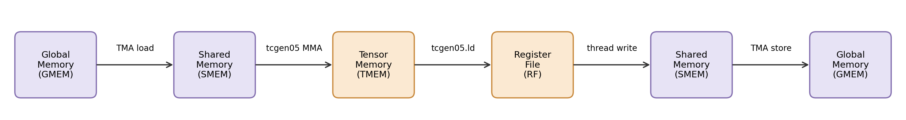

3. Building a Tiled GEMM¶
This chapter turns the tile-primitive model into working GEMM kernels. It starts with one 128 x 128 output tile, then adds the two pieces needed for larger matrices: accumulation over K and spatial tiling across CTAs.
Chapters 3, 4, and 5 follow one optimization path for GEMM: build a correct tiled kernel, replace thread copies with TMA and pipelining, then add warp specialization and CTA clusters.
Read each step as a change to the tile-primitive contract from Chapter 2 — which scope runs the operation, which layout the operand tiles use, which dispatch path executes it. A small card at the start of each step names the pillar that changes; the others stay fixed. Step 1 sets the baseline.
3.1. GEMM¶
GEMM is the dense matrix multiply behind linear layers, attention projections, and many convolution implementations. The examples in this tutorial use \(D = A B^{\top}\):
\(A\) has shape \(M \times K\).
\(B\) has shape \(N \times K\).
\(D\) has shape \(M \times N\).
\(D[m,n] = \sum_k A[m,k] \cdot B[n,k]\).
The transpose appears because the examples store \(B\) as \(N\) rows of length \(K\), which matches common linear-layer weight layouts.
We report GEMM throughput in TFLOPS:
3.1.1. GEMM Data Path¶
A Blackwell GEMM kernel is organized around tile movement and tile compute:

Fig. 3.1.1 Memory Data Flow¶
Operand tiles move from GMEM to SMEM. tcgen05.mma consumes the SMEM
operands and writes accumulators to TMEM. The epilogue reads TMEM back
into registers, then stores the final result to GMEM.
3.2. Optimization Path¶
After the basic GEMM path works, the rest of the tutorial adds Blackwell features through TIRX tile primitives:
TMA async movement: move GMEM <-> SMEM tiles through Blackwell’s hardware copy path, with barriers tracking completion.
Software pipelining: use multiple SMEM stages so data movement for the next K tile can overlap Tensor Core compute on the current tile.
Persistent scheduling: let CTAs pull output tiles dynamically instead of relying only on a fixed launch-grid mapping.
Warp specialization: split producer, MMA consumer, and writeback roles across warpgroups.
CTA clusters: let two CTAs cooperate on a larger Blackwell MMA tile.
Multi-consumer execution: use multiple consumer warpgroups to compute different parts of the tile, increasing compute density.
3.3. Step 1: Sequential Single-Tile GEMM¶
Step 1 computes one 128 x 128 output tile with K = 64.
What this step establishes — the baseline - Scope: one warpgroup (128 threads) walks the whole path in order. - Layout: A/B tiles in SMEM, accumulator in TMEM, result staged through registers. - Dispatch: sync
Tx.copyfor the loads,tcgen05for the MMA.
3.3.1. Single-Tile Dataflow¶
The first kernel follows the core GEMM data path once for a single 128 x 128 output tile.
Allocate: SMEM (pool allocator), TMEM (
tcgen05.alloc), mbarrierLoad: All 128 threads cooperatively copy A and B tiles from GMEM to SMEM (sync
Tx.copy)Compute: Single elected thread issues
Tx.gemm_async+tcgen05.commit; all threads wait on mbarrierWriteback: Warpgroup reads TMEM → registers; each thread casts fp32→fp16 and writes to GMEM
Deallocate: TMEM deallocation
3.3.2. Four Pieces of the First Kernel¶
Before the full runnable source, read the kernel in four pieces: memory allocation, synchronous load, MMA dispatch, and writeback. The API names used here follow the vocabulary introduced at the end of the previous chapter.
Memory allocation.
pool = Tx.SMEMPool()
tmem_addr = pool.alloc((1,), "uint32") # TMEM address (4 bytes)
mma_bar = pool.alloc((1,), "uint64", align=8) # mbarrier (8 bytes)
pool.move_base_to(1024) # Skip to offset 1024
Asmem = pool.alloc((BLK_M, BLK_K), a_type, layout=A_layout) # 128×64 fp16
Bsmem = pool.alloc((BLK_N, BLK_K), b_type, layout=B_layout) # 128×64 fp16
pool.commit()
The pool.move_base_to(1024) ensures Asmem/Bsmem start at offset
1024, leaving room for metadata. The layout=A_layout uses
tma_shared_layout for a swizzled SMEM placement compatible with TMA
and tcgen05.mma; SMEM layout is part of the tile primitive contract.
Synchronous load.
with Tx.cta():
Tx.copy(Asmem[:, :], A[:, :])
Tx.copy(Bsmem[:, :], B[:, :])
Tx.cuda.cta_sync()
Step 1 only has one tile (M=N=128, K=64), so we copy the entire A and B.
with Tx.cta() means the CTA cooperates on the copy, with each thread
handling a portion of the data. Tx.cuda.cta_sync() waits for the CTA
and makes the shared-memory writes visible before MMA reads Asmem
and Bsmem. The asynchronous GEMM chapter replaces this thread-copy
path with TMA.
MMA dispatch.
if warp_id == 0:
with Tx.thread(Tx.ptx.elect_sync()):
Tx.gemm_async(tmem[:, :BLK_N], Asmem[:, :], Bsmem[:, :],
accum=False, dispatch="tcgen05", cta_group=1)
Tx.ptx.tcgen05.commit(mma_bar.ptr_to([0]), cta_group=1)
Read the issuer selection in two steps. First, if warp_id == 0
restricts the code to warp 0 inside the warpgroup. Then
with Tx.thread(Tx.ptx.elect_sync()) uses the elected-lane predicate
as the guard, so only one active lane in warp 0 enters the block.
The result is that one thread issues Tx.gemm_async and
tcgen05.commit. The computation is still a tile-level MMA: the
instruction is issued by one elected thread, but the hardware performs
the cooperative MMA for the tile described by the SMEM operand layouts
and the TMEM accumulator layout. Only one thread issues it because
tcgen05.mma is a single-instruction cooperative op — the hardware
runs the whole tile MMA from one launch, so if all 128 threads issued it
you would launch the same tile’s MMA 128 times. accum=False means
this MMA overwrites the TMEM destination instead of adding into an
existing accumulator.
Writeback.
Dreg_wg = Dreg.view(128, BLK_N, layout=TileLayout(S[(128, BLK_N) : (1@tid_in_wg, 1)]))
with Tx.warpgroup():
Tx.copy_async(Dreg_wg[:, :], tmem[:, :BLK_N])
Tx.ptx.tcgen05.wait.ld()
with Tx.thread():
Tx.cast(Dreg_f16[:], Dreg[:])
m_thr = Tx.meta_var(m_st + warp_id * 32 + lane_id)
Tx.copy(D[m_thr, n_st : n_st + BLK_N], Dreg_f16[:])
The MMA result is in TMEM as a 128 x 128 fp32 accumulator tile. The
accumulator uses fp32 because GEMM sums many products along K, and
keeping the running sum in higher precision reduces rounding error. The
output buffer D is declared as fp16, so the epilogue has to move the
accumulator to registers, cast it to fp16, and store it to D.
Dreg is a per-thread register buffer with BLK_N elements.
Dreg_wg is a warpgroup view of those registers:
TileLayout(S[(128, BLK_N) : (1@tid_in_wg, 1)])
In this layout, the first dimension of the tile is mapped to warpgroup threads. Row 0 is owned by warpgroup thread 0, row 1 by warpgroup thread 1, and so on through row 127. The second dimension stays inside each thread’s local register buffer, so each thread holds the columns for its own row. Since a warpgroup has 128 threads, the whole 128 x 128 output tile is split row-by-row across the warpgroup.
Under with Tx.warpgroup(), the Tx.copy_async(Dreg_wg, tmem)
readback lowers to the Blackwell TMEM load path (tcgen05.ld). It is
asynchronous, so Tx.ptx.tcgen05.wait.ld() is required before the
code reads Dreg.
After the wait, each thread’s private Dreg[:] holds the fp32 values
for one logical output row. The thread casts those values to fp16 in
Dreg_f16, computes its global output row,
m_thr = Tx.meta_var(m_st + warp_id * 32 + lane_id)
and writes D[m_thr, n_st:n_st + BLK_N]. Warp 0 writes rows 0-31,
warp 1 writes rows 32-63, warp 2 writes rows 64-95, and warp 3 writes
rows 96-127.
3.3.3. Complete Kernel¶
With the walkthrough in mind, here is the complete runnable kernel (M=N=128, K=64):
import tvm
from tvm.script import tirx as Tx
from tvm.tirx.layout import S, TCol, TileLayout, TLane, tid_in_wg
from tvm.tirx.operator.tile_primitive.cuda.tma_utils import (SwizzleMode,
tma_shared_layout)
The kernel is wrapped in the same hgemm_vX(M, N, K) style used by
the later steps. Step 1 still runs with M=N=128, K=64, so the launch
contains exactly one output tile:
def hgemm_v1(M, N, K):
a_type = tvm.DataType("float16")
b_type = tvm.DataType("float16")
d_type = tvm.DataType("float16")
acc_type = tvm.DataType("float32")
BLK_M, BLK_N, BLK_K = 128, 128, 64
# MMA_M/MMA_N/MMA_K document the underlying hardware MMA tile; they are not
# passed to gemm_async (which derives the MMA shape from the operand and
# accumulator tiles), so the later steps omit them.
MMA_M, MMA_N, MMA_K = 128, 128, 16
A_layout = tma_shared_layout(a_type, SwizzleMode.SWIZZLE_128B_ATOM, (BLK_M, BLK_K))
B_layout = tma_shared_layout(b_type, SwizzleMode.SWIZZLE_128B_ATOM, (BLK_N, BLK_K))
@Tx.prim_func
def kernel(
A: Tx.Buffer((M, K), a_type),
B: Tx.Buffer((N, K), b_type),
D: Tx.Buffer((M, N), d_type),
):
Tx.device_entry()
# Step 1 is a single-tile kernel: M = BLK_M and N = BLK_N, so the grid
# is 1x1. Starting with a 1x1 grid keeps the per-CTA tile offsets
# (m_st, n_st) trivially zero; Steps 3+ generalise this to larger M / N.
bx, by = Tx.cta_id([M // BLK_M, N // BLK_N])
wg_id = Tx.warpgroup_id([1]) # single warpgroup, so wg_id is always 0 (unused below)
warp_id = Tx.warp_id_in_wg([4])
lane_id = Tx.lane_id([32])
# --- SMEM allocation ---
pool = Tx.SMEMPool()
tmem_addr = pool.alloc((1,), "uint32")
mma_bar = pool.alloc((1,), "uint64", align=8)
pool.move_base_to(1024)
Asmem = pool.alloc((BLK_M, BLK_K), a_type, layout=A_layout)
Bsmem = pool.alloc((BLK_N, BLK_K), b_type, layout=B_layout)
pool.commit()
# --- Barrier + TMEM init (warp 0 only) ---
if warp_id == 0:
if lane_id == 0:
Tx.ptx.mbarrier.init(mma_bar.ptr_to([0]), 1)
Tx.ptx.tcgen05.alloc(Tx.address_of(tmem_addr), n_cols=512, cta_group=1)
Tx.ptx.fence.proxy_async("shared::cta")
Tx.ptx.fence.mbarrier_init()
Tx.cuda.cta_sync()
tmem = Tx.decl_buffer(
(128, 512), "float32", scope="tmem", allocated_addr=tmem_addr[0],
layout=TileLayout(S[(128, 512) : (1@TLane, 1@TCol)])
)
m_st = Tx.meta_var(bx * BLK_M)
n_st = Tx.meta_var(by * BLK_N)
phase_mma: Tx.int32 = 0
# --- Load: all threads copy global -> shared (synchronous).
# With M=BLK_M and N=BLK_N the slices below cover the full matrices;
# the slice form is kept so the diff to Step 3 (multi-tile) is minimal.
with Tx.cta():
Tx.copy(Asmem[:, :], A[m_st:m_st + BLK_M, :])
Tx.copy(Bsmem[:, :], B[n_st:n_st + BLK_N, :])
Tx.cuda.cta_sync()
# --- Compute: single elected thread issues MMA ---
if warp_id == 0:
with Tx.thread(Tx.ptx.elect_sync()):
Tx.gemm_async(
tmem[:, :BLK_N], Asmem[:, :], Bsmem[:, :],
accum=False, dispatch="tcgen05", cta_group=1
)
Tx.ptx.tcgen05.commit(mma_bar.ptr_to([0]), cta_group=1)
Tx.ptx.mbarrier.try_wait(mma_bar.ptr_to([0]), phase_mma)
# --- Writeback: TMEM -> RF -> GMEM ---
Dreg = Tx.alloc_local((BLK_N,), acc_type)
Dreg_f16 = Tx.alloc_local((BLK_N,), d_type)
Dreg_wg = Dreg.view(128, BLK_N,
layout=TileLayout(S[(128, BLK_N) : (1@tid_in_wg, 1)]))
with Tx.warpgroup():
Tx.copy_async(Dreg_wg[:, :], tmem[:, :BLK_N])
Tx.ptx.tcgen05.wait.ld()
with Tx.thread():
Tx.cast(Dreg_f16[:], Dreg[:])
m_thr = Tx.meta_var(m_st + warp_id * 32 + lane_id)
Tx.copy(D[m_thr, n_st : n_st + BLK_N], Dreg_f16[:])
# --- Deallocate TMEM ---
Tx.cuda.cta_sync()
if warp_id == 0:
Tx.ptx.tcgen05.relinquish_alloc_permit(cta_group=1)
Tx.ptx.tcgen05.dealloc(tmem_addr[0], n_cols=512, cta_group=1)
return kernel
The compile/run/check pattern is the same for every GEMM step, so the
tutorial shows it once. Later sections only show the kernel; to run
another step, replace hgemm_v1 and the problem size below with the
kernel and shape you want to test. Compile one step per fresh Python
session — restart the kernel before testing a different step, since the
examples reuse inner names and the compiler keeps per-session state.
import torch
target = tvm.target.Target("cuda")
device = torch.device('cuda') # gpu(0)
M, N, K = 128, 128, 64
kernel = hgemm_v1(M, N, K)
with target:
ex = tvm.compile(tvm.IRModule({"main": kernel}), target=target, tir_pipeline="tirx")
torch.cuda.empty_cache()
torch.cuda.synchronize()
A_tensor = torch.randn(M, K, dtype=torch.float16, device=device)
B_tensor = torch.randn(N, K, dtype=torch.float16, device=device)
D_tensor = torch.zeros(M, N, dtype=torch.float16, device=device)
# ex.mod(...) takes torch tensors directly — the same call form used in every chapter.
ex.mod(A_tensor, B_tensor, D_tensor)
D_ref = (A_tensor.float() @ B_tensor.float().T).half()
max_err = float((D_tensor - D_ref).abs().max())
print(f"Max error vs torch reference: {max_err:.6f}")
# Relative tolerance, like the Chapter 5 and Flash Attention cells: output
# magnitude grows with K, so a fixed absolute bound would fail at larger K.
torch.testing.assert_close(D_tensor, D_ref, rtol=2e-2, atol=1e-2)
print("PASS")
# Optional timing for larger kernels.
ITERS = 10
for _ in range(3):
ex.mod(A_tensor, B_tensor, D_tensor)
torch.cuda.synchronize()
start = torch.cuda.Event(enable_timing=True)
end = torch.cuda.Event(enable_timing=True)
start.record()
for _ in range(ITERS):
ex.mod(A_tensor, B_tensor, D_tensor)
end.record()
torch.cuda.synchronize()
ms = start.elapsed_time(end) / ITERS
tflops = 2 * M * N * K / ms / 1e9
print(f"Performance: {ms:.3f} ms, {tflops:.1f} TFLOPS")
3.3.4. Limits of the Single-Tile Kernel¶
The first kernel computes the right result, but it still has four deliberate limits:
It handles only one K tile.
It handles only one output tile.
It uses synchronous GMEM -> SMEM copies instead of TMA.
It does not overlap data movement and compute.
3.4. Step 2: K-Loop Accumulation¶
Step 1 computes one K tile. Step 2 keeps one output tile but lets K contain multiple 64-wide chunks. The kernel repeats the same load -> MMA -> wait sequence for each K chunk and accumulates the result in TMEM. Reusing one mbarrier across iterations brings the chapter’s first real correctness hazard: track the wrong phase and the wait returns before the MMA finishes, silently corrupting the result. The mechanics below show why.
What this step changes — Layout - Scope: unchanged — one warpgroup. - Layout: the same SMEM tile pair and TMEM accumulator slot are reused across the K-loop — no new storage, the operand tiles just stream through one fixed pair of buffers. - Dispatch: unchanged.
3.4.1. K-Loop Mechanics¶
To handle matrices where K > 64, we loop over K in chunks of
BLK_K=64. Each iteration loads the next A and B K-slice into SMEM,
then issues Tx.gemm_async. On the first K chunk, accum=False
initializes the TMEM accumulator. On later chunks, accum=True adds
the new MMA result into the existing TMEM accumulator.
The same mbarrier is reused for every MMA completion. To reuse it
safely, the code must track which barrier phase it is waiting for. An
mbarrier has a 1-bit phase, either 0 or 1. Each time the expected
arrival happens, the barrier flips to the other phase.
try_wait(bar, phase) waits until the barrier’s internal phase is
different from the phase argument:
K iteration |
Local
|
What
|
Local update after wait |
|---|---|---|---|
0 |
0 |
barrier flips to 1 |
|
1 |
1 |
barrier flips to 0 |
|
2 |
0 |
barrier flips to 1 |
|
Without phase_mma ^= 1, the second iteration would still call
try_wait(bar, 0). The barrier is already at phase 1 from the first
MMA, so the wait returns immediately — even before the second MMA is
issued — instead of waiting for the second MMA to finish.
3.4.2. Complete Kernel¶
import tvm
from tvm.script import tirx as Tx
from tvm.tirx.layout import S, TCol, TileLayout, TLane, tid_in_wg
from tvm.tirx.operator.tile_primitive.cuda.tma_utils import (SwizzleMode,
tma_shared_layout)
The kernel is wrapped in a function hgemm_v2(M, N, K) that returns a
TIRX kernel for the given dimensions. The grid is still [1, 1]
because this step only handles one output tile:
def hgemm_v2(M, N, K):
a_type = tvm.DataType("float16")
b_type = tvm.DataType("float16")
d_type = tvm.DataType("float16")
acc_type = tvm.DataType("float32")
BLK_M, BLK_N, BLK_K = 128, 128, 64
K_TILES = K // BLK_K
A_layout = tma_shared_layout(a_type, SwizzleMode.SWIZZLE_128B_ATOM, (BLK_M, BLK_K))
B_layout = tma_shared_layout(b_type, SwizzleMode.SWIZZLE_128B_ATOM, (BLK_N, BLK_K))
@Tx.prim_func
def kernel(
A: Tx.Buffer((M, K), a_type),
B: Tx.Buffer((N, K), b_type),
D: Tx.Buffer((M, N), d_type),
):
Tx.device_entry()
bx, by = Tx.cta_id([M // BLK_M, N // BLK_N]) # still one output tile (M=N=128)
wg_id = Tx.warpgroup_id([1])
warp_id = Tx.warp_id_in_wg([4])
lane_id = Tx.lane_id([32])
pool = Tx.SMEMPool()
tmem_addr = pool.alloc((1,), "uint32")
mma_bar = pool.alloc((1,), "uint64", align=8)
pool.move_base_to(1024)
Asmem = pool.alloc((BLK_M, BLK_K), a_type, layout=A_layout)
Bsmem = pool.alloc((BLK_N, BLK_K), b_type, layout=B_layout)
pool.commit()
if warp_id == 0:
if lane_id == 0:
Tx.ptx.mbarrier.init(mma_bar.ptr_to([0]), 1)
Tx.ptx.tcgen05.alloc(Tx.address_of(tmem_addr), n_cols=512, cta_group=1)
Tx.ptx.fence.proxy_async("shared::cta")
Tx.ptx.fence.mbarrier_init()
Tx.cuda.cta_sync()
tmem = Tx.decl_buffer(
(128, 512), "float32", scope="tmem", allocated_addr=tmem_addr[0],
layout=TileLayout(S[(128, 512) : (1@TLane, 1@TCol)]))
phase_mma: Tx.int32 = 0
m_st = Tx.meta_var(bx * BLK_M)
n_st = Tx.meta_var(by * BLK_N)
# === K-loop: iterate over K in chunks of BLK_K ===
for i in Tx.serial(K_TILES): # serial device loop (keeps the full-K A/B parameters correctly shaped)
# Load the i-th K chunk
with Tx.cta():
Tx.copy(Asmem[:, :], A[:, i*BLK_K:(i+1)*BLK_K])
Tx.copy(Bsmem[:, :], B[:, i*BLK_K:(i+1)*BLK_K])
Tx.cuda.cta_sync()
# MMA: accum=False for first tile, True for rest
if warp_id == 0:
with Tx.thread(Tx.ptx.elect_sync()):
Tx.gemm_async(tmem[:, :BLK_N], Asmem[:, :], Bsmem[:, :],
accum=(i != 0), dispatch="tcgen05", cta_group=1)
Tx.ptx.tcgen05.commit(mma_bar.ptr_to([0]), cta_group=1)
# Wait for MMA, then flip phase
Tx.ptx.mbarrier.try_wait(mma_bar.ptr_to([0]), phase_mma)
phase_mma ^= 1
# === Writeback (same as Step 1) ===
Dreg = Tx.alloc_local((BLK_N,), acc_type)
Dreg_f16 = Tx.alloc_local((BLK_N,), d_type)
Dreg_wg = Dreg.view(128, BLK_N,
layout=TileLayout(S[(128, BLK_N) : (1@tid_in_wg, 1)]))
with Tx.warpgroup():
Tx.copy_async(Dreg_wg[:, :], tmem[:, :BLK_N])
Tx.ptx.tcgen05.wait.ld()
with Tx.thread():
Tx.cast(Dreg_f16[:], Dreg[:])
m_thr = Tx.meta_var(m_st + warp_id * 32 + lane_id)
Tx.copy(D[m_thr, n_st : n_st + BLK_N], Dreg_f16[:])
Tx.cuda.cta_sync()
if warp_id == 0:
Tx.ptx.tcgen05.relinquish_alloc_permit(cta_group=1)
Tx.ptx.tcgen05.dealloc(tmem_addr[0], n_cols=512, cta_group=1)
return kernel
K-loop accumulation still leaves one missing piece: tiling over M and N to support larger matrices.
3.5. Step 3: Spatial Tiling (Multi-CTA)¶
Steps 1-2 compute one output tile. Step 3 launches a 2D grid of CTAs so larger M and N dimensions are covered by multiple 128 x 128 output tiles. The example uses M=N=K=256.
What this step changes — Scope - Scope: a 2D grid of CTAs, each CTA owns one 128 x 128 output tile. - Layout: unchanged — per CTA, the same SMEM/TMEM/register path as Step 2. - Dispatch: unchanged.
3.5.1. Grid Mapping¶
To support larger matrices, we launch a 2D grid of CTAs:
[M // BLK_M, N // BLK_N]. Each CTA computes one 128 x 128 output
tile.
CTA (bx, by) owns this output region:
D[bx * BLK_M : (bx + 1) * BLK_M,
by * BLK_N : (by + 1) * BLK_N]
Inside the K-loop, that CTA repeatedly loads the matching K-slices:
A[bx * BLK_M : (bx + 1) * BLK_M, k : k + BLK_K]
B[by * BLK_N : (by + 1) * BLK_N, k : k + BLK_K]
This matches the tutorial’s D = A @ B.T convention: bx selects
rows of A and D, while by selects rows of B and columns of D.
One tile per CTA is simple but leaves reuse on the table: CTAs in the same row reload the same A tiles, and same-column CTAs reload the same B tiles, from GMEM. Persistent scheduling (next chapter) revisits this to keep those operands hot in L2.
Try with your agent: With M=N=K=256, BLK_M=BLK_N=128, and
BLK_K=64, ask it to trace CTA (1, 0) and CTA (0, 1). For
each CTA, list m_st, n_st, the A and B slices loaded for each K
iteration, and the D region written. Which B rows become D columns
because the kernel computes D = A @ B.T?
3.5.2. Complete Kernel¶
import tvm
from tvm.script import tirx as Tx
from tvm.tirx.layout import S, TCol, TileLayout, TLane, tid_in_wg
from tvm.tirx.operator.tile_primitive.cuda.tma_utils import (SwizzleMode,
tma_shared_layout)
Step 3 changes the grid to [M // BLK_M, N // BLK_N] instead of
[1, 1], and loads/stores use per-CTA offsets m_st and n_st:
def hgemm_v3(M, N, K):
a_type = tvm.DataType("float16")
b_type = tvm.DataType("float16")
d_type = tvm.DataType("float16")
acc_type = tvm.DataType("float32")
BLK_M, BLK_N, BLK_K = 128, 128, 64
K_TILES = K // BLK_K
A_layout = tma_shared_layout(a_type, SwizzleMode.SWIZZLE_128B_ATOM, (BLK_M, BLK_K))
B_layout = tma_shared_layout(b_type, SwizzleMode.SWIZZLE_128B_ATOM, (BLK_N, BLK_K))
@Tx.prim_func
def kernel(
A: Tx.Buffer((M, K), a_type),
B: Tx.Buffer((N, K), b_type),
D: Tx.Buffer((M, N), d_type),
):
Tx.device_entry()
# 2D grid: one CTA per 128x128 output tile
bx, by = Tx.cta_id([M // BLK_M, N // BLK_N])
wg_id = Tx.warpgroup_id([1])
warp_id = Tx.warp_id_in_wg([4])
lane_id = Tx.lane_id([32])
pool = Tx.SMEMPool()
tmem_addr = pool.alloc((1,), "uint32")
mma_bar = pool.alloc((1,), "uint64", align=8)
pool.move_base_to(1024)
Asmem = pool.alloc((BLK_M, BLK_K), a_type, layout=A_layout)
Bsmem = pool.alloc((BLK_N, BLK_K), b_type, layout=B_layout)
pool.commit()
if warp_id == 0:
if lane_id == 0:
Tx.ptx.mbarrier.init(mma_bar.ptr_to([0]), 1)
Tx.ptx.tcgen05.alloc(Tx.address_of(tmem_addr), n_cols=512, cta_group=1)
Tx.ptx.fence.proxy_async("shared::cta")
Tx.ptx.fence.mbarrier_init()
Tx.cuda.cta_sync()
tmem = Tx.decl_buffer(
(128, 512), "float32", scope="tmem", allocated_addr=tmem_addr[0],
layout=TileLayout(S[(128, 512) : (1@TLane, 1@TCol)]))
phase_mma: Tx.int32 = 0
# Per-CTA tile offsets
m_st = Tx.meta_var(bx * BLK_M)
n_st = Tx.meta_var(by * BLK_N)
# K-loop with offset A and B slices
for i in Tx.serial(K_TILES): # serial device loop (keeps the full-K A/B parameters correctly shaped)
with Tx.cta():
Tx.copy(Asmem[:, :], A[m_st:m_st+BLK_M, i*BLK_K:(i+1)*BLK_K])
Tx.copy(Bsmem[:, :], B[n_st:n_st+BLK_N, i*BLK_K:(i+1)*BLK_K])
Tx.cuda.cta_sync()
if warp_id == 0:
with Tx.thread(Tx.ptx.elect_sync()):
Tx.gemm_async(tmem[:, :BLK_N], Asmem[:, :], Bsmem[:, :],
accum=(i != 0), dispatch="tcgen05", cta_group=1)
Tx.ptx.tcgen05.commit(mma_bar.ptr_to([0]), cta_group=1)
Tx.ptx.mbarrier.try_wait(mma_bar.ptr_to([0]), phase_mma)
phase_mma ^= 1
# Writeback to the correct output tile
Dreg = Tx.alloc_local((BLK_N,), acc_type)
Dreg_f16 = Tx.alloc_local((BLK_N,), d_type)
Dreg_wg = Dreg.view(128, BLK_N,
layout=TileLayout(S[(128, BLK_N) : (1@tid_in_wg, 1)]))
with Tx.warpgroup():
Tx.copy_async(Dreg_wg[:, :], tmem[:, :BLK_N])
Tx.ptx.tcgen05.wait.ld()
with Tx.thread():
Tx.cast(Dreg_f16[:], Dreg[:])
m_thr = Tx.meta_var(m_st + warp_id * 32 + lane_id)
Tx.copy(D[m_thr, n_st:n_st+BLK_N], Dreg_f16[:])
Tx.cuda.cta_sync()
if warp_id == 0:
Tx.ptx.tcgen05.relinquish_alloc_permit(cta_group=1)
Tx.ptx.tcgen05.dealloc(tmem_addr[0], n_cols=512, cta_group=1)
return kernel
3.6. Exercises¶
In Steps 1-3,
Tx.copymoves A and B tiles into SMEM before MMA. Why does the kernel needTx.cuda.cta_sync()beforeTx.gemm_asyncreads those SMEM tiles?In Step 2, what happens if
phase_mma ^= 1is removed from the K-loop? Does the kernel wait for every MMA, or can a later wait pass too early?For M=N=4096 with BLK_M=BLK_N=128, how many CTAs are launched in Step 3? Which operand tiles are logically reused across neighboring CTAs, and does Step 3 exploit that reuse?